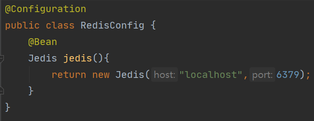
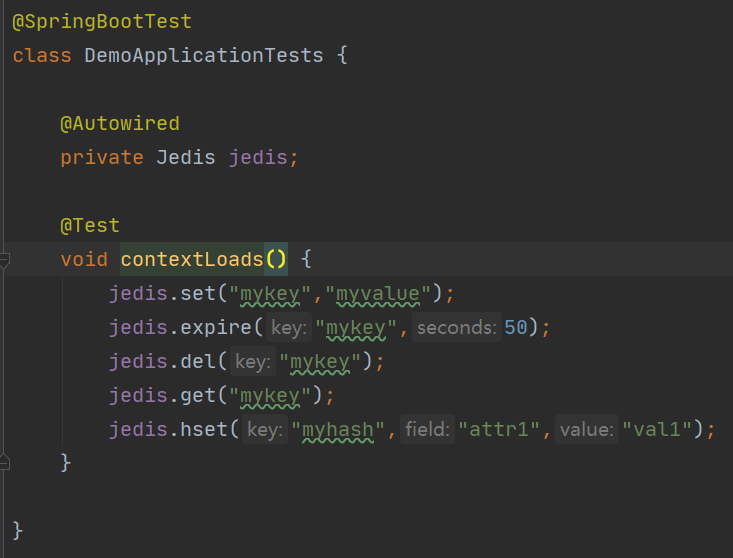

Spring与Redis整合
如果你学过Redis，应该知道它是一个键值对的内存数据库应用，一般是作为服务器后端中的数据库或者是缓存来使用（国内大环境下用作缓存更多）。
Redis作为数据库使用
这里主要介绍两个比较常见的Redis操作库，Jedis和SpringDataRedis
Jedis
Jedis是一个小巧、简单、易用的Redis client，Java导入Jedis依赖后，可以直接对Redis进行连接，并直接操作各种数据结构。
可以使用下面的pom依赖导入Jedis。
1 | <dependency> |
在Spring环境下，Jedis可以类比成一个JDBC的Connection，你可以通过这个Connection对Redis进行各种操作，那么就很容易写出这样的代码。
首先进行配置，将Jedis配置为Bean，在构造对象时，提供redis的服务器地址和端口号。

使用的时候，注入Jedis的bean即可，随后就可以通过jedis对象操作redis了。

SpringDataRedis
SpringDataRedis是SpringData这个大项目中的一个子项目，是一个高封装程度和使用自由度的Java Redis框架。
使用SpringDataRedis，我们可以至少可以获得以下好处。
- 自由选择Redis连接器，比如jedis、jredis、lettuce
- 通过预先配置的RedisTemplate，直接进行Redis操作，免去了创建、释放连接的过程，与JdbcTemplate作用类似
- 可以自由选择数据序列化的方式
- 提供了对SpringCache整合Redis的支持，后面会讲到
那么Jedis和SpringDataRedis的关系也就明朗了，SpringDataRedis底层使用的是redis client，比如jedis、jredis、lettuce这样的，即SpringDataRedis是对jedis这种连接器的一种封装。
SpringDataRedis的依赖
SpringDataRedis可以通过以下的SpringBoot起步依赖引入。
1 | <dependency> |
SpringDataRedis的官方文档上介绍的引入方式是这种。
1 | <dependency> |
这两种方式有什么不一样？很简单，看一下spring-boot-starter-data-redis是怎么构成的。
1 | <dependencies> |
实际上就是spring-boot-starter、spring-data-redis和lettuce-core这三个依赖组成的，同时也可以发现，SpringDataRedis默认使用的是lettuce作为连接器。
SpringDataRedis的使用
施工中
Redis作为缓存使用
施工中